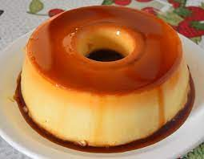

Receita do Leandro
Pudim de leite condensado
 Home
|
Home
|
 Ingredientes
|
Ingredientes
|
 Modo de preparo
Modo de preparo

Ligue Agora ou envie um e-mail.
Receita do Leandro
Pudim de leite condensado
Ingredientes:
- 5 ovos
- 1 lata de leite condensado
- Calda
- 1 xicara de açucar
- 1 xicara de água
Modo de preparo
- Bata tudo no liquidificador
- Unte uma forma para pudim
- Despeje a calda caramelizada na forma
- Leve a forma ao fogo em banho maria
- Aguarde em torno de 1 hora
copyringht by Leandro Vitor | © 2022
Subir a Pagina